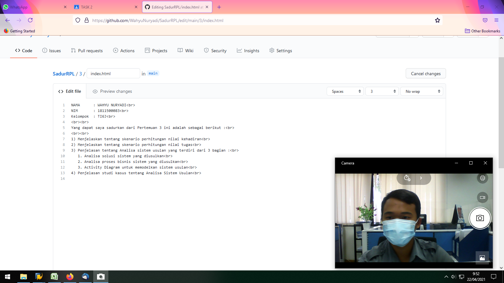

NAMA : WAHYU NURYADI
NIM : 1811500083
Kelompok : TI6J
Yang dapat saya sadurkan dari Pertemuan 3 ini adalah sebagai berikut :
1) Menjelaskan tentang skenario perhitungan nilai kehadiran
2) Menjelaskan tentang skenario perhitungan nilai tugas
3) Penjelasan tentang Analisa sistem usulan yang terdiri dari 3 bagian :
1. Analisa solusi sistem yang diusulkan
2. Analisa proses bisnis sistem yang diusulkan
3. Activity Diagram untuk memodelkan sistem usulan
4) Penjelasan studi kasus tentang Analisa Sistem Usulan
5) Sistem usulan itu harus memperoleh manfaat bagi stakeholder (misalnya pelayan toko & konsumen), manfaat ini biasanya untuk memudahkan atau memangkas proses bisnis
6) Activity diagram digunakan untuk menggambarkan proses bisnis, bukan menjelaskan detail suatu halaman. Detail suatu halaman digambarkan menggunakan sequence diagram
Proses Penyaduran

Studi Kasus Analisa Sistem Usulan

Download file latihan astah disini